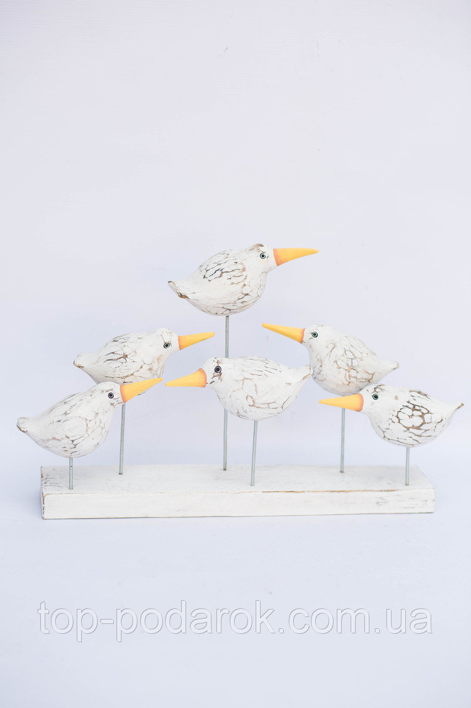

Как известно, Дубай – город контрастов. Самые революционные
и фантастические мечты архитекторов
способен воплотить в жизнь этот
мегаполис, построенный на нефти и за
счет нефти

Новое
Няшные фигурки птичек
Ну не, вы это видели? Они реально милые!
Потрясающие, замечательные!
Ты можешь сделать такие же? Ну и молчи тогда)
Новое
Бойся этого мужика
Вы когда-нибудь видели эту статую?
Если нет, то теперь видели)
Мне нужно чем-нибудь заполнить этот слайд
так что здесь будет этот текст